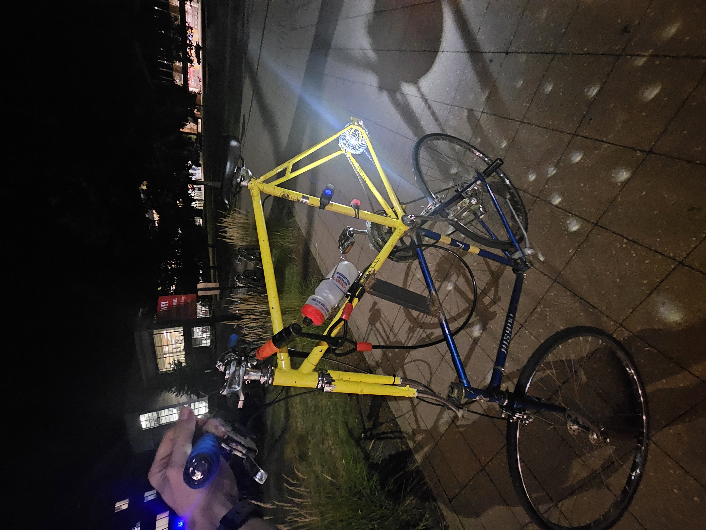

Tall Bike
Skills: Welding, Metalworking, Bicycle Repair

I have always loved bicycles and ridiculous contraptions. So during the end of my senior year of high school, when my woodshop teacher acquired a variety of bicycle frame building jigs and offered to work with me on a bicycle frame. However, the year was running out and I still wanted to make some bicycle related things. So I built a tall bike with two frames I bought off of Craigslist for $30 total and learned basic metal working and welding.
When I got to college, I added a disco ball that spins when you pedal and a skeleton on the back of the frame. I really love riding it around because it never fails to bring a smile everywhere it goes.